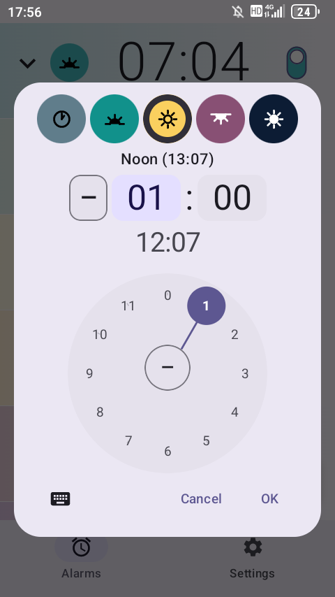
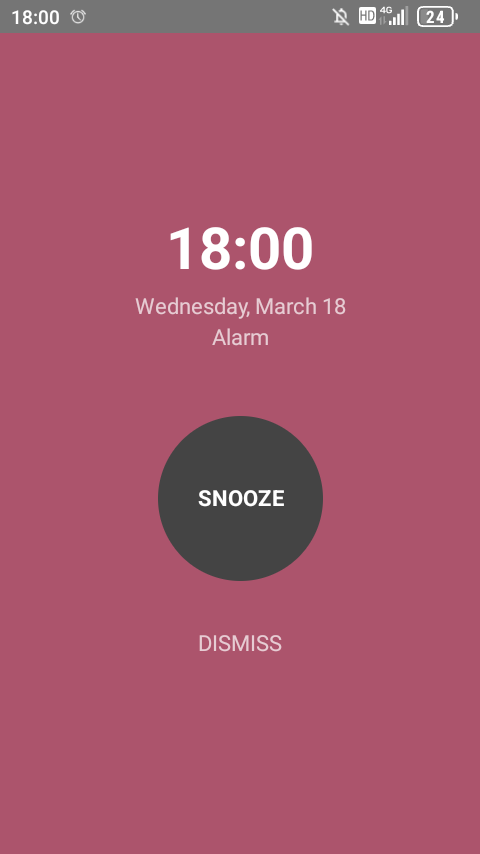
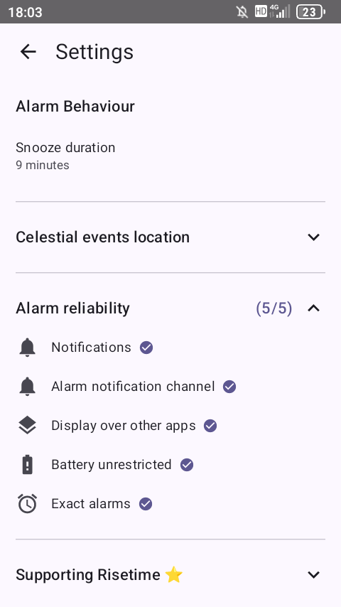

Pick your anchorChoose a celestial event: sunrise, solar noon, sunset, or midnight. This is the reference point your alarm tracks.
Set your offsetDecide how far before or after. Thirty minutes before sunrise. One hour after sunset. Pick which days it repeats.
That's itRisetime recalculates the exact alarm time every day as the sun's schedule shifts. You never adjust it.
Features of the Risetime sunrise alarm app
Anchored to the sky
Set alarms relative to sunrise, solar noon, sunset, or midnight. Choose an offset and the alarm time adjusts every day as the sun's schedule shifts with the seasons. Define it once. It stays right all year.
Full clock replacement
Risetime handles both celestial and fixed-time alarms. No need to keep your native clock app around for the standard ones. One app, all your alarms.
Offline and private by design
Risetime has no internet permission. Not disabled — absent. Sunrise times are calculated on your device using astronomical math. No servers. No accounts. No data leaves your phone.
Set it, then forget it
The app recalculates your alarm times in the background every day. Most days you never open it. That is by design — Risetime works best when you forget it exists.
Real alarms, not notifications
Risetime uses the same OS-level alarm API as your built-in Android clock. Your alarm survives Doze mode, battery optimization, and device restarts. When it is time to wake up, your phone rings.
Who uses a sunrise alarm app?
Biohackers and circadian rhythm optimisers — set one alarm at sunrise to wake, another 8 hours before sunrise to wind down. Both shift automatically as the sun moves through the seasons.
Dawn meditators and yoga practitioners — set your practice alarm to sunrise once, and it follows the seasons without any adjustment.
Photographers chasing golden and blue hour — "30 minutes before sunset" for golden hour, "20 minutes after sunset" for blue hour. Both shift automatically as the seasons move the sun. Works offline in the field with no cell service.
Muslim users for Fajr and Suhoor — Risetime is not a muslim alarm clock app with prayer times or Azan, but its sunrise-relative alarms are precise enough for Fajr timing. Set "45 minutes before sunrise" once; the alarm shifts every day through Ramadan and all year.
Outdoor workers, dog walkers, farmers — if your day starts with daylight, your alarm should too.
Anyone tired of adjusting throughout the year — set it once. It stays right.
Screenshots — sunrise alarm app for Android

Pick your anchor and offset

Wake gently

Reliability you can check
Offline sunrise alarm — no internet, no tracking
Risetime does not request internet permission. There is no server. There is no account to create. There is no analytics SDK measuring how you use the app.
No INTERNET permission — the app cannot connect to the internet
No analytics, crash reporting, or telemetry of any kind
No accounts, no cloud sync, no sign-in
Location stays on your device — used only for sunrise math
Risetime is free to use with up to three alarms — celestial or fixed-time, your choice. If you need more than three, you'll need to support the app.
Supporting Risetime unlocks unlimited alarms. You can find that option in Settings. No nag screens, no countdowns, no "upgrade to continue" prompts — just an honest option when you're ready.
Frequently asked questions
How is Risetime different from other sunrise alarm apps?
Most "sunrise alarm" apps simulate sunrise by gradually brightening your screen. Risetime is different — it actually changes when your alarm goes off based on the real sunrise time at your location. Set "30 minutes before sunrise" once, and the alarm shifts every day as the seasons change. No manual adjustment needed.
Does Risetime need an internet connection?
No. Risetime has no internet permission at all — it cannot connect to the internet even if it wanted to. Sunrise and sunset times are calculated on your device using astronomical math. It works in airplane mode, in the field, anywhere.
Can I use Risetime as my only alarm clock app?
Yes. Risetime supports both celestial alarms (anchored to sunrise, sunset, solar noon, or midnight) and standard fixed-time alarms. You can replace your default Android clock entirely.
Is Risetime accurate for Fajr prayer times?
Risetime is not a dedicated Islamic prayer time app, but its sunrise-relative alarms are astronomically precise. Setting an alarm to "45 minutes before sunrise" will track Fajr timing accurately throughout the year, including during Ramadan as sunrise times shift.
Does the alarm still go off if my phone is in Doze mode or Battery Saver?
Yes. Risetime uses Android's setAlarmClock API — the same system-level alarm mechanism used by your built-in clock app. It survives Doze mode, battery optimization, and device restarts.
Can I set an alarm for golden hour or blue hour?
Yes. Set an alarm to "30 minutes before sunset" for golden hour, or "20 minutes after sunset" for blue hour. Both shift automatically as sunset times change through the seasons — perfect for photographers who need to be on location at the right time.